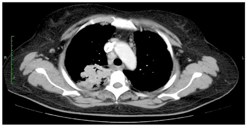
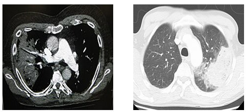
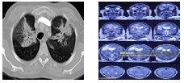
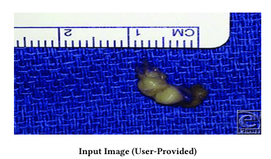
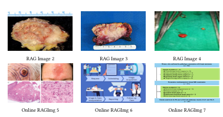

In the input image, is it a malignant lesion?
CT of the chest demonstrating right-sided pneumonia.
MRI of Brain and MRA Brain showing encephalomalacia with extensive changes.
What is the image showing?
Image showing Gastrointestinal Stromal Tumor after surgical removal.
MIRA consists of four key components designed for end-to-end training and efficient inference: (1) a dual-pathway retrieval system with dedicated vision and language encoders, (2) a context-rethink module for dynamic retrieval control, (3) a multimodal fusion module that aligns retrieved knowledge with image features, and (4) a decoder-only large language model (LLM) enhanced with Chain-of-Thought (CoT) reasoning; along with an optional citation module for post-hoc interpretability.
Performance comparison of multimodal report generation abilities between MIRA and other frameworks specialized on measured on 1000 samples split from MIMIC-CXR
Performance comparison of PMC-VQA question set correctness analysis
@misc{mira,
title={MIRA: A Novel Framework for Fusing Modalities in Medical RAG},
author={Jinhong Wang and Tajamul Ashraf and Zongyan Han and Jorma Laaksonen and Rao Mohammad Anwer},
year={2025},
eprint={2507.07902},
archivePrefix={arXiv},
primaryClass={cs.CV},
url={https://arxiv.org/abs/2507.07902},
}